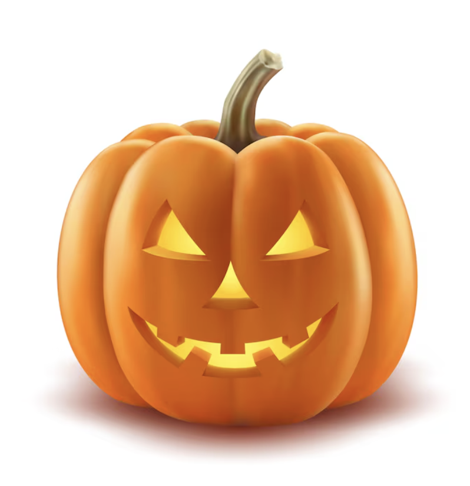

The tradition of carving pumpkins on Halloween began with an Irish folktale. The folktale is about a man named Stingy Jack who tricked the devil multiple times. He was forced to roam the earth with a burning coal inside of a hollowed out root vegetable.